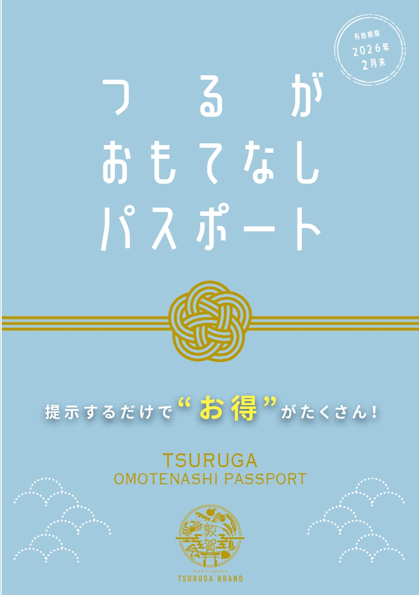

〒914-0063
福井県敦賀市神楽町2丁目1番4号
TEL/(0770)22-2611
FAX/(0770)24-1311
LINE公式アカウントを開設しました
非常時の情報収集や各種補助事業の情報発信を目的としてLINE公式アカウントを開設いたしました。事業者の皆様におかれましては、お手数をおかけしますが、何卒登録ご協力のほどよろしくお願いいたします。
トピックス
-
 令和6年度新規創業支援事業県内で新たに創業を行う際の初期費用を支援します。
令和6年度新規創業支援事業県内で新たに創業を行う際の初期費用を支援します。 -
敦賀まちづくり魅力UP応援補助金観光客等の受け入れのために市内各店舗の魅力向上を図り、誘客を促進する店舗等の改修等に対して支援を行います。
-
「Ocket」ご利用案内会社の発展や課題解決の為に、大学などに協力を依頼できます。
-
つるがおもてなしパスポート市内店舗のお得な割引サービス等を掲載。各店舗で提示することで、特別価格での提供や特典を受けることができます。
-
「つるが旨いもんつるがのO・Mi・Ya」追加募集「つるが旨いもんつるがのO・Mi・Ya」のWEBサイトで“イチオシ”“オススメ”のお土産品を発信するお店を追加募集します。
-
ふく割スマートフォンアプリ [ふく割] に県内の小売・飲食・サービス業の お店でつかえる電子クーポンを発行します。
ビジネスモール案件情報